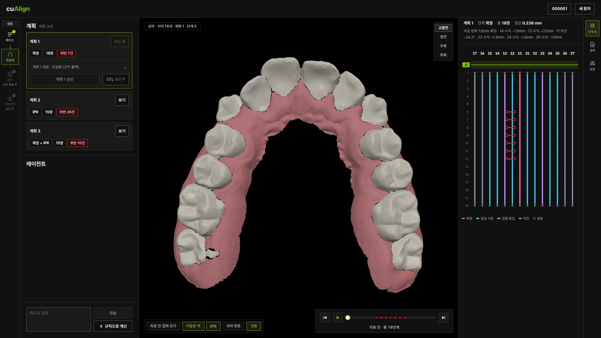

투명교정 스테이징 에이전트 · 연구용 PoC
말로 전달한 처방 조건을
검증된 단계 계획 초안으로
cuAlign은 치과의사가 전달한 조건을 바탕으로 투명교정의 치아 이동 단계 계획(staging) 초안을 만들고, 계산 도구로 검증한 뒤 문제가 있으면 다시 계획하는 AI 에이전트입니다. 진단과 처방, 최종 판단은 의사가 합니다.

어떻게 동작하나요?
핵심 흐름은 조건 확인, 계획, 도구 검증, 허용 범위 안의 재계획, 의사 검토입니다. 조건을 만족하는 안이 없으면 그 사실을 설명하고, 발치 금지 같은 조건을 임의로 풀지 않습니다.
- 1
스캔 올리기
치아별로 나뉜 상악 STL과 선택 잇몸 스캔을 올리거나, 샘플 케이스를 고릅니다.
- 2
입력 확인
치아 번호, 누락, 치아 폭, 총생, 좌우 방향을 의사가 확인합니다. 지원하지 않는 스캔은 계획하지 않습니다.
- 3
계획과 단계
에이전트가 조건을 정리하고 확장·IPR·병행·발치 가정 전략 가운데 허용된 안으로 목표 배열과 중간 단계를 계산합니다.
- 4
규칙 검사
계산 도구가 공간 부족, 겹침, 이동량, 단계 수 위반을 돌려주면 다른 허용안을 시도하거나 의사에게 묻습니다.
- 5
의사 승인
규칙을 통과한 계획을 의사가 3D로 검토하고 명시적으로 승인합니다. 조건을 바꾸면 새 계획을 다시 승인합니다.
- 6
STL 내보내기
승인한 계획만 단계별 치아 STL로 내보냅니다. 잇몸 스캔이 있으면 단계별 프린트용 상악 모형도 함께 넣습니다.
핵심 화면
NVIDIA 도구가 맡는 역할
도구의 개수보다 각 도구가 실행 흐름에서 맡는 역할을 기준으로 정리했습니다. 검증 수준은 저장소의 NVIDIA 활용 문서에 구분해 두었습니다.
- NeMo Agent Toolkit
- 계획 에이전트, 읽기 전용 검토 함수, 계산 도구, 대화 서버와 계획 이벤트
- Nemotron · NIM
- 대화와 도구 선택. 키 없는 규칙 폴백은 NIM 활용 증거로 보지 않습니다.
- NeMo Guardrails
- 에이전트를 부르는 경로의 대화 입력·출력 검사
- OpenShell
- 서버를 샌드박스에서 실행하는 정책 실험
- Agent Skill
- 임상 규칙 스킬을 계획 에이전트가 필요할 때 불러 씁니다.
현재 범위와 한계
할 수 있는 것
- 상악 치아의 평행 이동, 앞니 회전 보정, 이웃보다 1mm 넘게 높거나 낮은 치아의 수직 보정을 계산합니다.
- 여러 전략의 계획을 비교하고, 규칙 위반을 단계별로 보여 줍니다.
- 승인한 계획만 단계별 치아 STL로 내보냅니다.
아직 아닌 것
- 치아 이동을 계산하는 기하 PoC이며, 힘·조직 반응·실제 치료 결과를 검증한 시스템이 아닙니다.
- 송곳니·소구치·대구치 회전, 토크, 하악, 교합은 지원하지 않습니다.
- 출력은 계획 검토용 형상이며 착용 가능한 투명교정 장치가 아닙니다.
- 기간은 단계 수를 환산한 계획상 값이며 실제 치료 기간을 예측하지 않습니다.
- 사용자 인증과 데이터 격리가 없어 로컬 시연 환경을 기준으로 합니다.
샘플 케이스는 공개 데이터셋 Poseidon3D(Kubik & Spanel 2024, CC-BY-4.0)의 실제 상악 스캔입니다. 규칙 통과는 임상적 적합성이나 의사 승인을 뜻하지 않습니다.